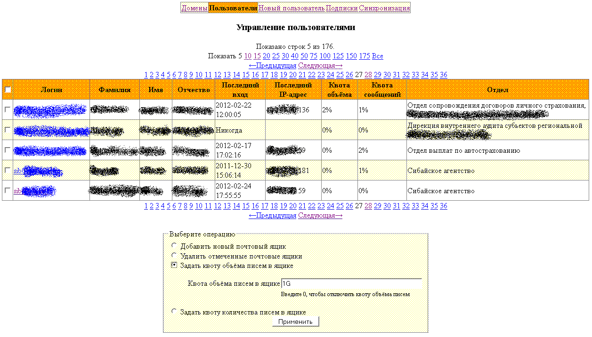

Продолжаю потихоньку совершенствовать свою почтовую систему, параллельно разрабатывая веб-интерфейс для управления всем этим хозяйством. Этот пост по сути носит лишь отчётный характер и не предназначен для внедрения кем бы то ни было в практику. С другой стороны, знающие люди могут заинтересоваться описанными здесь идеями и реализовать нечто подобное у себя.
Месяца два назад аккуратно поэкспериментировал с таблицей virtual_alias_maps и обнаружил, что в случае, если запрос для одного псевдонима возвращает два адреса, Postfix отправляет письмо на оба адреса.
Таким образом можно делать рассылки штатными средствами самого Postfix. Можно добавить в таблицу псевдонимов несколько записей с одинаковым псевдонимом, но с разными получателями и получить простейший список рассылки.
Потом я подумал о том, что между такой рассылкой и копированием входящей почты нескольким адресатам фактически нет никакой разницы. Разница только лишь в том, куда подставлена эта карта - в recipient_bcc_maps или в virtual_alias_maps. Потом я подумал о том, что обе функции можно объединить в одной таблице, если учитывать существование адреса в таблице пользователей и статус этого пользователя - включен или отключен. Если пользователь включен, то он должен получить своё письмо в свой ящик, а вместе с ним все те, кто подписан на его входящую почту - это поведение для recipient_bcc_maps. Если пользователь отключен или он не существует, то почту должны получить лишь те, кто подписан на входящую почту этого адреса - это поведение virtual_alias_maps. Добавим в таблицу ещё дополнительную колонку, которая позволит отличать подписку на исходящую почту и входящую почту и получим совмещённую таблицу алиасов, подписок, пересылок и скрытых копий входящей и исходящей почты.
Вот и запрос для создания соответствующей таблицы:
CREATE TABLE `subscription` ( `id` int(10) unsigned NOT NULL auto_increment, `direction` varchar(1) NOT NULL default 'I', `email` varchar(255) character set latin1 NOT NULL, `recipient` varchar(255) character set latin1 NOT NULL, PRIMARY KEY (`id`), UNIQUE KEY `subscription` (`direction`,`email`,`recipient`) ) ENGINE=InnoDB AUTO_INCREMENT=1 DEFAULT CHARSET=utf8;
Запрос для создания таблицы пользователей/ящиков у меня выглядит так:
CREATE TABLE `user` ( `id` int(10) unsigned NOT NULL auto_increment, `active` varchar(1) default 'Y', `email` varchar(255) character set latin1 NOT NULL, `password` varchar(255) character set latin1 NOT NULL default '', `surname` varchar(255) NOT NULL default '', `name` varchar(255) NOT NULL default '', `patronym` varchar(255) NOT NULL default '', `lastip` varchar(32) default NULL, `lasttime` datetime default NULL, `bytes` bigint(20) default NULL, `messages` int(11) default NULL, `max_bytes` bigint(20) unsigned NOT NULL default '1073741824', `max_messages` int(10) unsigned NOT NULL default '1000', `ad_login` varchar(255) character set latin1 NOT NULL default '', `phones` varchar(255) NOT NULL default '', `position` varchar(255) NOT NULL default '', `department` varchar(255) NOT NULL default '', PRIMARY KEY (`id`), UNIQUE KEY `email` (`email`), UNIQUE KEY `fullname` (`surname`,`name`,`patronym`) ) ENGINE=InnoDB AUTO_INCREMENT=1 DEFAULT CHARSET=utf8;
И, наконец, запрос для создания таблицы доменов/транспортов выглядит так:
CREATE TABLE `domain` ( `id` int(10) unsigned NOT NULL auto_increment, `domain` varchar(255) character set latin1 NOT NULL, `transport` varchar(255) character set latin1 NOT NULL default 'dovecot:', PRIMARY KEY (`id`), UNIQUE KEY `domain` (`domain`) ) ENGINE=InnoDB AUTO_INCREMENT=1 DEFAULT CHARSET=utf8;
В файле /etc/postfix/main.cf имеется 5 карт для работы с этими таблицами:
transport_maps = mysql:/etc/postfix/mysql/transport.cf virtual_mailbox_maps = mysql:/etc/postfix/mysql/user.cf virtual_alias_maps = mysql:/etc/postfix/mysql/subscription.cf sender_bcc_maps = mysql:/etc/postfix/mysql/sender_bcc.cf recipient_bcc_maps = mysql:/etc/postfix/mysql/recipient_bcc.cf
Ещё одна карта используется для отказа в приёме писем для тех адресатов, у которых переполнился ящик:
check_recipient_access mysql:/etc/postfix/mysql/quota.cf
Ещё одна карта используется для аутентификации POP-before-SMTP (и для IMAP-before-SMTP):
mysql:/etc/postfix/mysql/pop-before-smtp.cf
Вот сами эти карты. Первая - /etc/postfix/mysql/transport.cf:
user = postfix password = postfix_password dbname = mail hosts = 127.0.0.1 query = SELECT transport FROM domain WHERE domain='%s'
Вторая - /etc/postfix/mysql/user.cf:
user = postfix
password = postfix_password
dbname = mail
hosts = 127.0.0.1
query = SELECT CONCAT(SUBSTRING_INDEX(email, '@', -1), '/', SUBSTRING_INDEX(email, '@', 1), '/')
FROM user
WHERE email='%s'
Третья - /etc/postfix/mysql/subscription.cf:
user = postfix
password = postfix_password
dbname = mail
hosts = 127.0.0.1
query = SELECT recipient
FROM subscription
WHERE direction='I'
AND email='%s'
AND email NOT IN (SELECT email
FROM user
WHERE email='%s'
AND active='Y')
Четвёртая - /etc/postfix/mysql/sender_bcc.cf:
user = postfix
password = postfix_password
dbname = mail
hosts = 127.0.0.1
query = SELECT recipient
FROM subscription
WHERE direction='O'
AND email='%s'
AND email IN (SELECT email
FROM user
WHERE email='%s'
AND active='Y')
Пятая - /etc/postfix/mysql/recipient_bcc.cf:
user = postfix
password = postfix_password
dbname = mail
hosts = 127.0.0.1
query = SELECT recipient
FROM subscription
WHERE direction='I'
AND email='%s'
AND email IN (SELECT email
FROM user
WHERE email='%s'
AND active='Y')
Шестая - /etc/postfix/mysql/quota.cf:
user = postfix
password = postfix_password
dbname = mail
hosts = 127.0.0.1
query = SELECT '452 Mailbox is over quota'
FROM user
WHERE email = '%s'
AND ((bytes >= max_bytes AND max_bytes > 0)
OR (messages >= max_messages AND max_messages > 0))
Седьмая - /etc/postfix/mysql/pop-before-smtp.cf:
user = postfix
password = postfix_password
dbname = mail
hosts = 127.0.0.1
query = SELECT DISTINCT lastip
FROM user
WHERE lastip='%s'
AND ADDTIME(lasttime, '0:1:0') > NOW()
Для реализации POP-before-SMTP и IMAP-before-SMTP сделаны два скрипта, которые вызываются сразу после аутентификации в Dovecot.
Первый - /etc/dovecot/pop-before-smtp.sh:
#!/bin/sh echo "UPDATE user SET lasttime=NOW(), lastip='$IP' WHERE email='$USER';" | mysql -udovecot -pdovecot_password -h127.0.0.1 mail exec /usr/lib/dovecot/pop3 "$@"
И второй - /etc/dovecot/imap-before-smtp.sh:
#!/bin/sh echo "UPDATE user SET lasttime=NOW(), lastip='$IP' WHERE email='$USER';" | mysql -udovecot -pdovecot_password -h127.0.0.1 mail exec /usr/lib/dovecot/imap "$@"
В Dovecot используются два файла, позволяющие брать информацию из БД MySQL.
Первый - /etc/dovecot/dovecot-mysql.conf:
driver = mysql
connect = host=127.0.0.1 dbname=mail user=dovecot password=dovecot_password
default_pass_scheme = CRYPT
password_query = SELECT password FROM user WHERE email='%u'
user_query = SELECT CONCAT(SUBSTRING_INDEX(email, '@', -1), '/', SUBSTRING_INDEX(email, '@', 1), '/'), \
999 AS uid, \
999 AS gid, \
CONCAT('*:bytes=', max_bytes, ':messages=', max_messages) AS quota_rule \
FROM user \
WHERE email = '%u'
Второй - /etc/dovecto/dovecot-dict-mysql.conf:
connect = host=127.0.0.1 dbname=mail user=dovecot password=dovecot_password
map {
pattern = priv/quota/storage
table = user
username_field = email
value_field = bytes
}
map {
pattern = priv/quota/messages
table = user
username_field = email
value_field = messages
}
Файл конфигурации самого Dovecot /etc/dovecot/dovecot.conf у меня выглядит вот так:
protocols = pop3 imap
disable_plaintext_auth = no
log_timestamp = "%Y-%m-%d %H:%M:%S "
mail_location = maildir:/var/mail/virtual/%Ld/%Ln
first_valid_uid = 999
first_valid_gid = 999
dict {
quotadict = mysql:/etc/dovecot/dovecot-dict-mysql.conf
}
plugin {
quota = dict:user::proxy::quotadict
quota_rule = *:storage=1G:messages=1000
}
protocol pop3 {
mail_plugins = quota
mail_executable = /etc/dovecot/pop-update-lastlog.sh
}
protocol imap {
mail_plugins = quota imap_quota
mail_executable = /etc/dovecot/imap-update-lastlog.sh
}
protocol lda {
postmaster_address = postmaster@mydomain.ru
mail_plugins = quota
quota_full_tempfail = yes
rejection_reason = Your message to <%t> was automatically rejected:%n%r
quota_exceeded_message = 422: No space to store your message
}
auth_default_realm = mydomain.ru
auth default {
mechanisms = plain login
passdb sql {
args = /etc/dovecot/dovecot-mysql.conf
}
userdb sql {
args = /etc/dovecot/dovecot-mysql.conf
}
socket listen {
client {
path = /var/spool/postfix/private/auth
mode = 0660
user = postfix
group = postfix
}
master {
path = /var/run/dovecot/auth-master
mode = 0660
user = vmail
group = vmail
}
}
}
Для ограничения доступа к таблицам из postfix и dovecot были созданы два пользователя, которые имеют минимально необходимые им для работы права доступа к соответствующей БД MySQL:
insert into user(host, user, password)
values('localhost', 'postfix', PASSWORD('postfix_password'));
insert into tables_priv(host, db, user, table_name, table_priv, column_priv)
values('localhost', 'mail', 'postfix', 'subscription', '', 'select');
insert into columns_priv(host, db, user, table_name, column_name, column_priv)
values('localhost', 'mail', 'postfix', 'subscription', 'direction', 'select');
insert into columns_priv(host, db, user, table_name, column_name, column_priv)
values('localhost', 'mail', 'postfix', 'subscription', 'email', 'select');
insert into columns_priv(host, db, user, table_name, column_name, column_priv)
values('localhost', 'mail', 'postfix', 'subscription', 'recipient', 'select');
insert into tables_priv(host, db, user, table_name, table_priv, column_priv)
values('localhost', 'mail', 'postfix', 'domain', '', 'select');
insert into columns_priv(host, db, user, table_name, column_name, column_priv)
values('localhost', 'mail', 'postfix', 'domain', 'domain', 'select');
insert into columns_priv(host, db, user, table_name, column_name, column_priv)
values('localhost', 'mail', 'postfix', 'domain', 'transport', 'select');
insert into tables_priv(host, db, user, table_name, table_priv, column_priv)
values('localhost', 'mail', 'postfix', 'user', '', 'select');
insert into columns_priv(host, db, user, table_name, column_name, column_priv)
values('localhost', 'mail', 'postfix', 'user', 'active', 'select');
insert into columns_priv(host, db, user, table_name, column_name, column_priv)
values('localhost', 'mail', 'postfix', 'user', 'email', 'select');
insert into columns_priv(host, db, user, table_name, column_name, column_priv)
values('localhost', 'mail', 'postfix', 'user', 'password', 'select');
insert into columns_priv(host, db, user, table_name, column_name, column_priv)
values('localhost', 'mail', 'postfix', 'user', 'bytes', 'select');
insert into columns_priv(host, db, user, table_name, column_name, column_priv)
values('localhost', 'mail', 'postfix', 'user', 'max_bytes', 'select');
insert into columns_priv(host, db, user, table_name, column_name, column_priv)
values('localhost', 'mail', 'postfix', 'user', 'messages', 'select');
insert into columns_priv(host, db, user, table_name, column_name, column_priv)
values('localhost', 'mail', 'postfix', 'user', 'max_messages', 'select');
insert into columns_priv(host, db, user, table_name, column_name, column_priv)
values('localhost', 'mail', 'postfix', 'user', 'lasttime', 'select');
insert into columns_priv(host, db, user, table_name, column_name, column_priv)
values('localhost', 'mail', 'postfix', 'user', 'lastip', 'select');
insert into user(host, user, password)
values('localhost', 'dovecot', PASSWORD('dovecot_password'));
insert into tables_priv(host, db, user, table_name, table_priv, column_priv)
values('localhost', 'mail', 'dovecot', 'user', '', 'select,update');
insert into columns_priv(host, db, user, table_name, column_name, column_priv)
values('localhost', 'mail', 'dovecot', 'user', 'email', 'select');
insert into columns_priv(host, db, user, table_name, column_name, column_priv)
values('localhost', 'mail', 'dovecot', 'user', 'password', 'select');
insert into columns_priv(host, db, user, table_name, column_name, column_priv)
values('localhost', 'mail', 'dovecot', 'user', 'bytes', 'select');
insert into columns_priv(host, db, user, table_name, column_name, column_priv)
values('localhost', 'mail', 'dovecot', 'user', 'max_bytes', 'select');
insert into columns_priv(host, db, user, table_name, column_name, column_priv)
values('localhost', 'mail', 'dovecot', 'user', 'messages', 'select');
insert into columns_priv(host, db, user, table_name, column_name, column_priv)
values('localhost', 'mail', 'dovecot', 'user', 'max_messages', 'select');
insert into columns_priv(host, db, user, table_name, column_name, column_priv)
values('localhost', 'mail', 'dovecot', 'user', 'bytes', 'update');
insert into columns_priv(host, db, user, table_name, column_name, column_priv)
values('localhost', 'mail', 'dovecot', 'user', 'messages', 'update');
insert into columns_priv(host, db, user, table_name, column_name, column_priv)
values('localhost', 'mail', 'dovecot', 'user', 'lasttime', 'update');
insert into columns_priv(host, db, user, table_name, column_name, column_priv)
values('localhost', 'mail', 'dovecot', 'user', 'lastip', 'update');
flush privileges;
Естественно, во всём тексте статьи, для облегчения восприятия, реальные пароли заменены на их заменители - postfix_password и dovecot_password.
На интерфейс для управления почтовым сервером (по понятным причинам, реальные данные пришлось забрызгать спреем) можно посмотреть на нижеследующих снимках.
Управление доменами и транспортами:
Редактирование одного домена и его транспорта:
Управление пользователями/ящиками (совмещены две разные картинки):
Редактирование одного пользователя/ящика:
Заведение нового пользователя/ящика:
Управление всеми подписками на входящие (скоро переделаю для управления подписками на исходящие тоже):
Страница синхронизации информации почтовой системы с порталом MS SharePoint Services 3.0:
В процессе написания веб-приложения сам собой зародился простенький фреймворк в процедурном стиле, в который входит несколько функций для более удобного доступа к БД, функции для работы с шаблонами, виджеты таблиц и форм редактирования объектов БД, функции для ведения веб-сессий в БД (стандартный механизм сессий для PHP мне не подошёл, сессии сейчас в приложении никак не используются), и каркас приложения, который вызывает функции обработки форм и формирования HTML-блоков. Аутентификацию на базе модуля сессий делал, но пока что она не имеет смысла, т.к. нет механизмов авторизации, то есть программа может отличать пользователей друг от друга, но у всех пользователей, включая неаутентифицированных, пока что равные права. Сейчас ограничение доступа осуществляется средствами веб-сервера, в котором каталог с приложением просто запаролен.
Планов по дальнейшему развитию системы ещё очень много. Однако, дело это не быстрое и не известно, хватит ли терпения всё это реализовать.